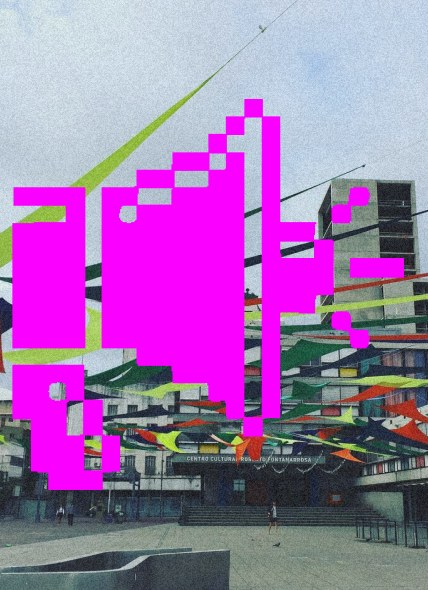
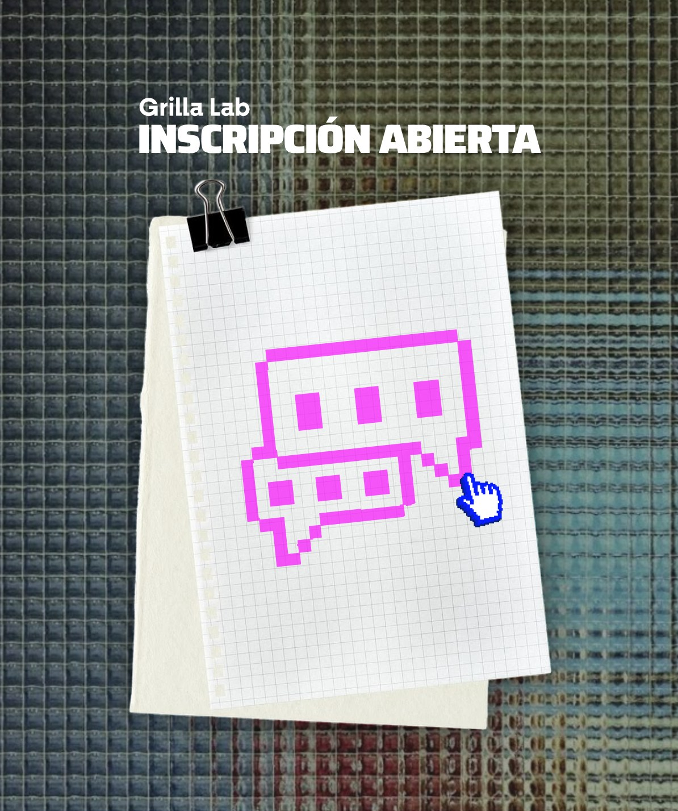
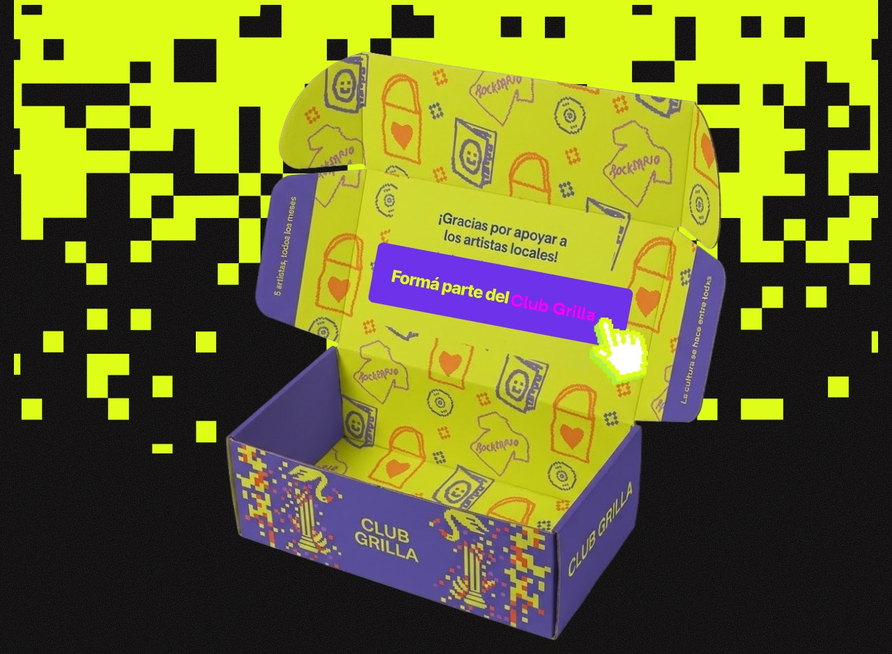

MÚSICAMatilda · March 19, 2026
MÚSICAMatilda · March 19, 2026 TEATROArtículo 19 · June 10, 2026
TEATROArtículo 19 · June 10, 2026 CINEVera y el placer de los otros · May 14, 2026
CINEVera y el placer de los otros · May 14, 2026 DEPORTENo Fitness Army · March 12, 2026
DEPORTENo Fitness Army · March 12, 2026
¿Quiénes somos?
Somos Grilla, una red que conecta la cultura independiente de Rosario y alrededores. Estamos para unir a productores autogestivos y al público en un solo lugar, organizando la oferta local sin depender de algoritmos ni publicidad. Nuestro objetivo es ser el canal directo para descubrir y vivir la agenda cultural de la ciudad.
¿Querés llevar tu proyecto cultural al siguiente nivel?

GeoGrilla
Es la app que te conecta sin intermediarios ni algoritmos con toda la agenda cultural independiente de la ciudad. Explorá en tiempo real, armá tu propia agenda personalizada con alertas en “Mi Grilla” y formá parte en los foros de debate.
Descargá la app hoy mismo y no te pierdas ningún evento.
Ya disponible en:
